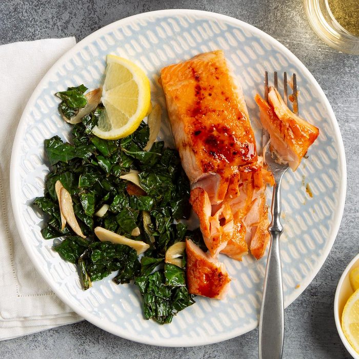

Salmon

Description
Salmon is called an oily fish, mostly due to its high percentage of good saturated fats. It is a full-flavored fish with a very colorful flesh, ranging from orange to dark red and it has a very distinctive flavor profile.
Ingredients
- Salmon fillets
- Brown Sugar
- Mustard
- Honey
- Salt
Steps
- Place fillets, skin side down, on a greased baking sheet. In a small bowl, combine brown sugar, mustard, honey and salt; spoon over salmon.
- Broil 3-4 in. from the heat until fish just begins to flake easily with a fork, 8-12 minutes.